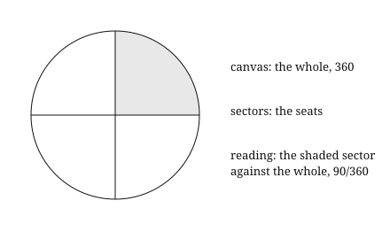
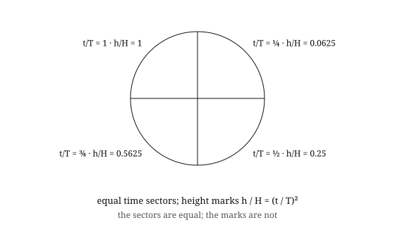

Two minutes. One formula.
Hold up a ruler. Measure the table.
You did not find a length. You read one distance against another.
That is every measurement. Nothing else enters.
ρ = Δx / (c Δt)
The mark is the separation. The canvas is the distance light spans. ρ is the reading.
Which distance is the ruler? That is not found. It is offered.
Orientation offers the scale, and the sign. Mark and canvas contribute equally.

Any negotiation may be drawn as a 360 pie. The pie is the whole. The sectors are the seats. The reading is the sector against the whole.
Drop a stone. Cut the fall into equal sectors of time.

h / H = (t / T)²
The sectors are equal. The marks are not. The rate is held. No constant is seated.
Light from the Sun. The whole path is 1.496 × 10¹¹ m. Light spans it in 499 s.
Cut the path into seats. Read each one.
| Seat | Δx | Δt | ρ = Δx / (c Δt) |
|---|---|---|---|
| ¼ | 3.740 × 10¹⁰ m | 124.8 s | 1.0000 |
| ½ | 7.480 × 10¹⁰ m | 249.5 s | 1.0000 |
| ¾ | 1.122 × 10¹¹ m | 374.3 s | 1.0000 |
| 1 | 1.496 × 10¹¹ m | 499.0 s | 1.0000 |
The seat changes the numbers. It does not change the reading. ρ = 1 at every seat.
One formula. Any expression. The reading is offered.